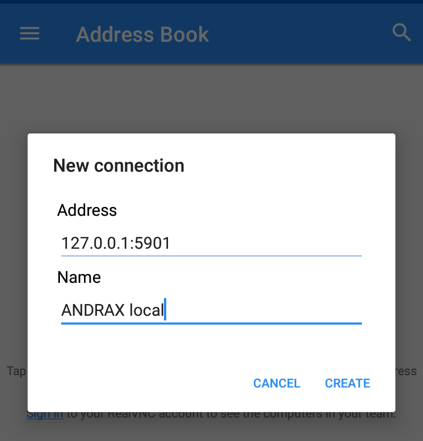

ANDRAX Remote Control
Control ANDRAX remotely is relative easy, ANDRAX is pre-configured to be accessible by SSH and VNC
SSH
ANDRAX has the OpenSSH by default, everything to a use is pre-configured...
How to enable SSH Server?
To start SSH Daemon you only need press this command:
sudo service ssh start
SSH server will be started and accessible by port 22 on ANDRAX IP.
Now try connect on ANDRAX from any SSH client and you will be able to run commands on your ANDRAX installation remotely.
VNC
The new generation of ANDRAX have Native Linux Graphical Interface, we use FluxBox, the best high performance and low power Window Manager.
To start Graphical Interface on ANDRAX?
Just run the following command on shell:
sudo service vnc start
Now ANDRAX VNC server is started and the Graphical Interface is fully operational, you can access the Graphical Interface using any VNC client on your Android or In your PC if you want it.
The port is 5901 and the password is andrax


Learn Ethical Hacking
If you want to become a professional, join our Advanced Ethical Hacking Training: JOIN NOW!